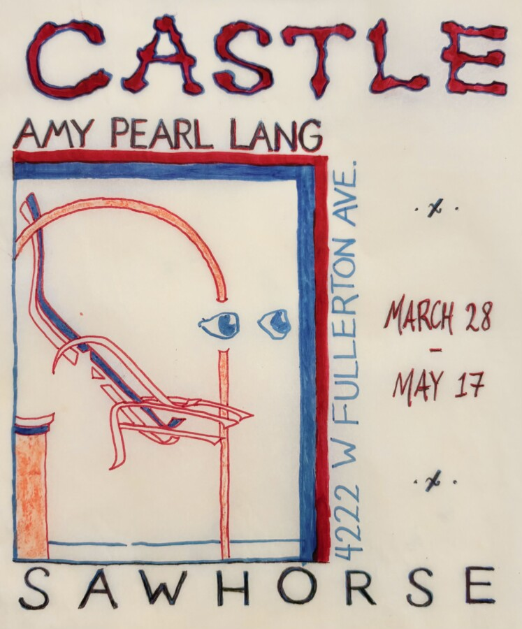

Amy Pearl Lang: CASTLE
Sawhorse is thrilled to present Castle, a solo exhibition of paintings by Amy Pearl Lang. Please join us for the opening reception on Saturday, March 28, 6-9pm🏰 .
We meet abroad on neutral ground.
Forget he of plain food and soft looking shoes, and all that which is common among commoners. Learn to love things so fine that they border on nothing. As for your successful animals and cities – descend upon them and pronounce them good.
A princess is unsure of what to eat.
And who will chew my food? Who will call and refresh me?
She embodies sweetness and wants harmony, but lacks inner power until a crisis forces growth.
If you walk slow and there’s no moon, your nightly disappearance will go unnoticed. You will see others in their respective pavilions, enduring their own peculiar tests. Their eyes point in different directions to keep their mythologies intact. Some are clever, some are spoiled, but all are as real as stone.
Show them your gift, you are grateful and good. We all drink from the same glass.